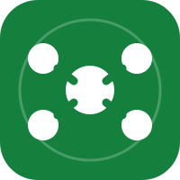
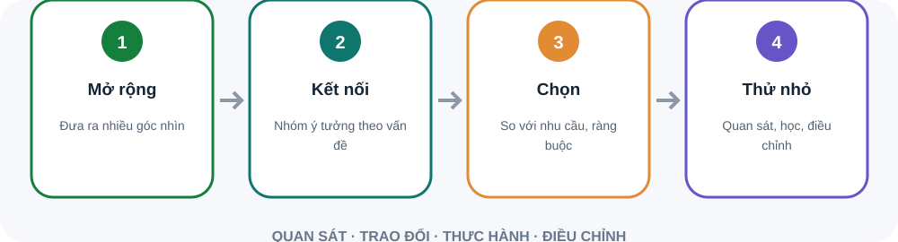

Mọi người hiểu kết quả chung cần đạt.
Biết ai quyết định, ai thực hiện và ai cần tham vấn.
Nhận diện việc của ai cần hoàn thành trước để người khác tiếp tục.
Kinh nghiệm khác nhau có thể giúp thấy rủi ro mới.
Chia lượt nói và cho thời gian chuẩn bị.
Mô tả bất đồng cụ thể và tác động.
Điều gì cả hai bên cần bảo vệ?
Chọn cách làm, người theo dõi và thời điểm đánh giá.
Mời người tham gia phát triển ý tưởng của nhau.
Không bác ý tưởng quá sớm khi đang mở rộng phương án.
Làm rõ kết quả, trách nhiệm và kỹ năng cần thiết.
Dùng tiêu chí liên quan đến công việc cho mọi ứng viên.
Tạo cơ hội đóng góp, học hỏi và được ghi nhận.
Nêu vấn đề và tiêu chí lựa chọn.
Cho mọi người viết ý tưởng trước rồi chia sẻ theo lượt.
Chọn một phương án và thống nhất cách đánh giá.
Sáng tạo không chỉ là nghĩ ý tưởng. Tách lúc mở rộng lựa chọn khỏi lúc đánh giá, rồi thử giả thuyết có thể kiểm tra.

Cho mọi người nghĩ riêng để ý tưởng đầu không lấn át.
Nêu giả thuyết, giới hạn rủi ro và dấu hiệu dừng.
Nguồn: Google re:Work · Understand team effectiveness
Sơ đồ tóm tắt bốn bước. Sáng tạo không chỉ là nghĩ ý tưởng. Tách lúc mở rộng lựa chọn khỏi lúc đánh giá, rồi thử giả thuyết có thể kiểm tra. Mở rộng trước: Cho mọi người nghĩ riêng để ý tưởng đầu không lấn át. Thử có trách nhiệm: Nêu giả thuyết, giới hạn rủi ro và dấu hiệu dừng.
Điều gì đã thống nhất, dựa giả định nào?
Tín hiệu nào xuất hiện trước khi trễ?
Một điều gì sẽ làm khác chu kỳ tới?
Dựng lại mốc thời gian từ dữ kiện, tìm điểm nghẽn và tín hiệu bị bỏ qua. Tránh gán nhãn tính cách. Chọn thay đổi có người phụ trách và thời điểm xem lại.
Phòng thực hành: họp rút kinh nghiệm 15 phút. Tình huống: Nhóm vừa lỡ một thời hạn quan trọng. Mục tiêu là hiểu cách hệ thống vận hành và cải thiện lần sau, đồng thời xử lý trách nhiệm.. Hãy tự nêu dữ kiện, rủi ro và hành động đầu tiên trước khi mở gợi ý xử lý.
Vai trò và phụ thuộc được hiểu rõ.
Bất đồng tập trung vào vấn đề và dữ kiện.
Mở ý tưởng, chọn theo tiêu chí, rồi thử nghiệm.